viewof rBC = Inputs.radio(new Map([
["(a) Hughes: h at x = 0, g at x = L", "a"],
["(b) swapped: g at x = 0, h at x = L", "b"],
["(c) g at both ends", "c"]
]), {value: "a", label: "Boundary conditions"})
viewof rF = Inputs.range([-150, 150], {value: -40, step: 5, label: "f (kN/m, toward +x)"})
viewof rH = Inputs.range([-1500, 1500], {value: 900, step: 25, label: "h (kN, toward +x)"})
viewof rG = Inputs.range([-3, 3], {value: 0, step: 0.1, label: "g (mm)"})
viewof rG0 = Inputs.range([-3, 3], {value: 2, step: 0.1, label: "g at x = 0 in (c) (mm)"})
viewof rEA = Inputs.range([0.5, 10], {value: 2.7, step: 0.1, label: "EA (×10⁹ N)"})Appendix D — 1D Poisson III: An Axially Loaded Rod
This page is the companion to 1D Poisson I: Heat Conduction Through a Wall. Both read Hughes’ one-dimensional model problem,
\[ (\mathrm{S}) \qquad \begin{aligned} &\text{Given } f : \bar\Omega \to \RR \text{ and constants } g \text{ and } h, \text{ find } u : \bar\Omega \to \RR \text{ such that} \\[2pt] &\qquad u_{,xx} + f = 0 \quad \text{on } \Omega = \,]0,1[ \\ &\qquad u(1) = g \\ &\qquad -u_{,x}(0) = h \end{aligned} \]
or, with the length and the material constant put back, as in Class 4,
\[ -\left(K u_{,x}\right)_{,x} = f \quad \text{in } \Omega = \,]0, L[ \qquad\qquad u = g \quad \text{on } \Gamma_g \qquad\qquad \left(K u_{,x}\right) n = h \quad \text{on } \Gamma_h \]
On this page \(u\) is an axial displacement and \(K = EA\) is the axial stiffness. The equations are letter-for-letter those of the wall. The difference is in what \(h\) means, and it changes the sign of \(h\) in a way that trips people up; see the boundary conditions below.
D.1 The physical problem
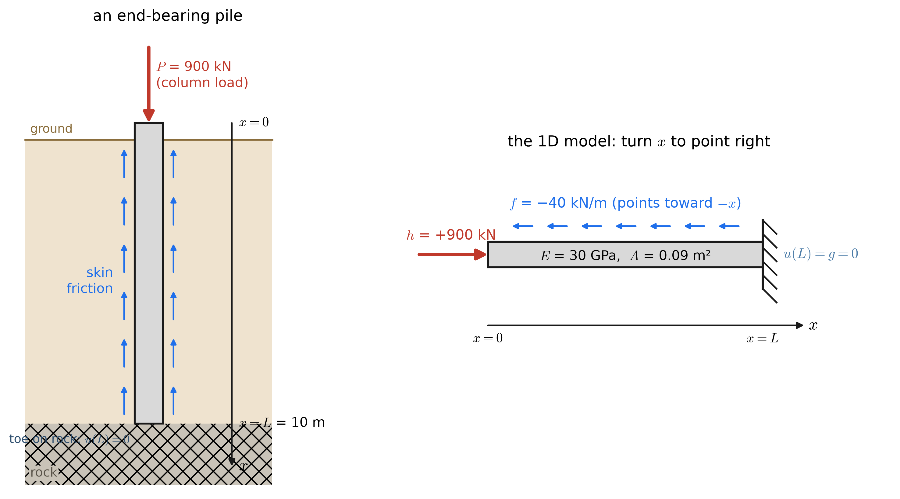
The pile is long and slender, and the loads act along its axis, so the only motion that matters is along the axis. Every cross-section at depth \(x\) moves the same distance \(u(x)\) down the pile: one number per cross-section, a function of one variable.
| What happens physically | Where | Becomes |
|---|---|---|
| Soil grips the shaft and resists its downward motion | throughout \(\Omega\) | the forcing \(f\) |
| The toe sits on rock that does not move | \(x = L\) | a Dirichlet condition \(u = g = 0\) |
| The column pushes down on the head with a known force | \(x = 0\) | a Neumann condition \((EA\,u_{,x})\,n = h\) |
Nothing about the equation cares that the pile is vertical. \(x\) can point any way, as long as every sign is read relative to it. Here \(+x\) is down.
D.2 The one-dimensional domain
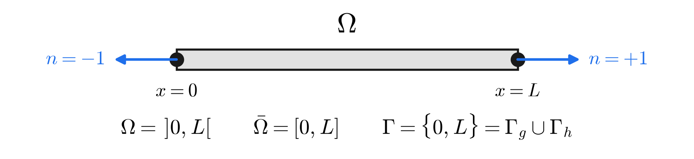
- \(\Omega = \,]0, L[\) is the inside of the rod; \(\bar\Omega = [0, L]\) adds its two ends.
- \(\Gamma = \{0, L\}\), with outward normals \(n = -1\) at \(x = 0\) and \(n = +1\) at \(x = L\).
- Each end gets exactly one condition: its displacement is known, or the force on it is known. \(\Gamma = \Gamma_g \cup \Gamma_h\), \(\Gamma_g \cap \Gamma_h = \emptyset\).
D.3 The quantities and their units
| Symbol | Meaning | SI units | This example |
|---|---|---|---|
| \(x\) | position along the axis | m | \(0 \le x \le L\), down the pile |
| \(L\) | length | m | 10 m |
| \(u(x)\) | axial displacement, positive toward \(+x\) | m (report in mm) | unknown |
| \(\varepsilon = u_{,x}\) | axial strain | m/m (dimensionless) | unknown |
| \(\sigma = E\varepsilon\) | axial stress, tension positive | Pa (MPa) | unknown |
| \(E\) | Young’s modulus | Pa (GPa) | 30 GPa, concrete |
| \(A\) | cross-sectional area | m² | 0.09 m² (300 × 300 mm) |
| \(K = EA\) | axial stiffness | N | \(2.7\times10^{9}\) N |
| \(N = EA\,u_{,x}\) | internal axial force, tension positive | N (kN) | unknown |
| \(f(x)\) | distributed axial load per unit length, positive toward \(+x\) | N/m (kN/m) | −40 kN/m |
| \(g\) | prescribed end displacement | m | 0 |
| \(h\) | prescribed end force, positive toward \(+x\) | N (kN) | +900 kN |
Hughes’ elasticity chapter writes the same problem per unit area: \(\sigma_{,x} + b = 0\), with a body force \(b\) in N/m³ and a traction \(h\) in Pa. For a rod of constant \(A\), multiply through by \(A\): \(f = bA\) in N/m, and \(h\) becomes a force in N. The pictures are the same.
D.4 Where the differential equation comes from
D.4.1 Kinematics: displacement and strain
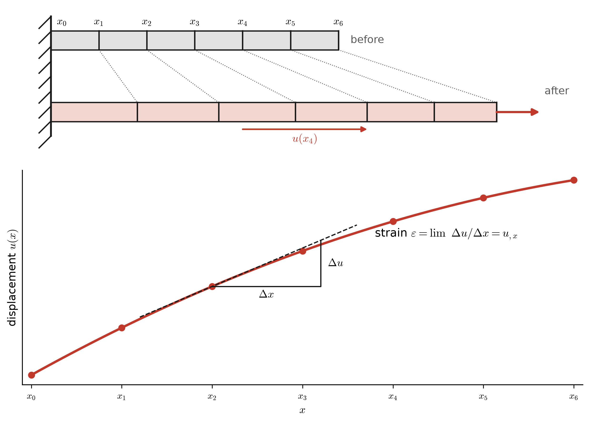
The displacement \(u(x)\) is how far the material point that started at \(x\) has moved along the axis. Two neighbouring points \(\Delta x\) apart end up \(\Delta x + \Delta u\) apart, so the strain — change in length per unit length — is the slope of the displacement:
\[ \varepsilon = \lim_{\Delta x \to 0} \frac{\left(\Delta x + \Delta u\right) - \Delta x}{\Delta x} = u_{,x} \qquad\qquad u_{,x} > 0 \;\text{stretched (tension)}, \qquad u_{,x} < 0 \;\text{shortened (compression)} \]
A uniform shift of the whole rod, $u = $ constant, has \(u_{,x} = 0\): it moves the rod without straining it. Hold on to this; it is why a rod with no support is not a solvable problem.
D.4.2 Material: Hooke’s law, from stress to force
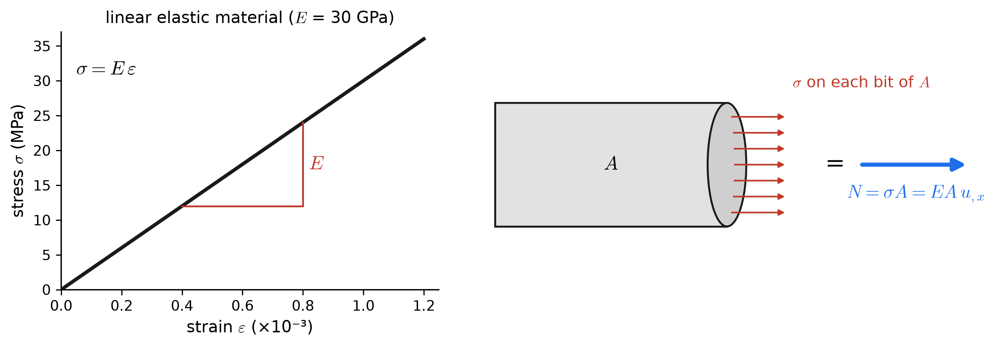
\[ N = \sigma A = E A\,\varepsilon = EA\,u_{,x} \qquad\qquad [\text{Pa}\cdot\text{m}^2 = \text{N}] \]
This is the rod’s version of Fourier’s law, with one sign difference: here there is no minus sign. Heat flows down the temperature gradient, but a rod pulls back along its stretch.
D.4.3 Equilibrium of a thin slice
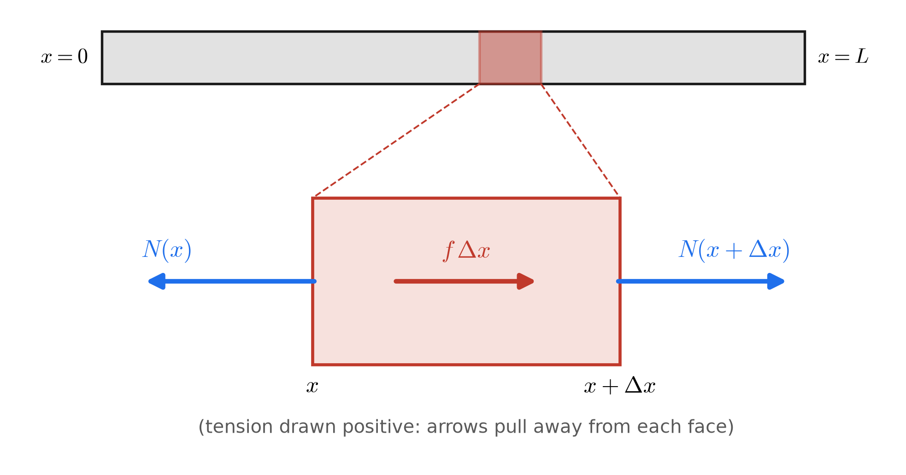
Sum the forces in \(+x\). The rod to the left pulls the slice toward \(-x\) with \(N(x)\); the rod to the right pulls it toward \(+x\) with \(N(x+\Delta x)\):
\[ -N(x) + N(x + \Delta x) + f\,\Delta x = 0 \qquad\xrightarrow[\;\text{divide by } \Delta x,\; \Delta x \to 0\;]{}\qquad N_{,x} + f = 0 \]
Read it as “the internal force drops by exactly the load applied along the way”: \(N_{,x} = -f\). In the pile, friction pushes up (\(f < 0\)), so \(N\) grows toward \(+x\). The compression is largest at the head and the soil takes some of it off as you go down.
Substituting \(N = EA\,u_{,x}\) gives the differential equation of the strong form:
\[ -\left(EA\,u_{,x}\right)_{,x} = f \quad\Longleftrightarrow\quad \left(EA\,u_{,x}\right)_{,x} + f = 0 \quad\xrightarrow{\;EA \text{ constant}\;}\quad EA\,u_{,xx} + f = 0 \quad\xrightarrow{\;EA = 1\;}\quad u_{,xx} + f = 0 \;\;\text{(Hughes)} \]
D.4.4 What the equation says about the shape of \(u\)
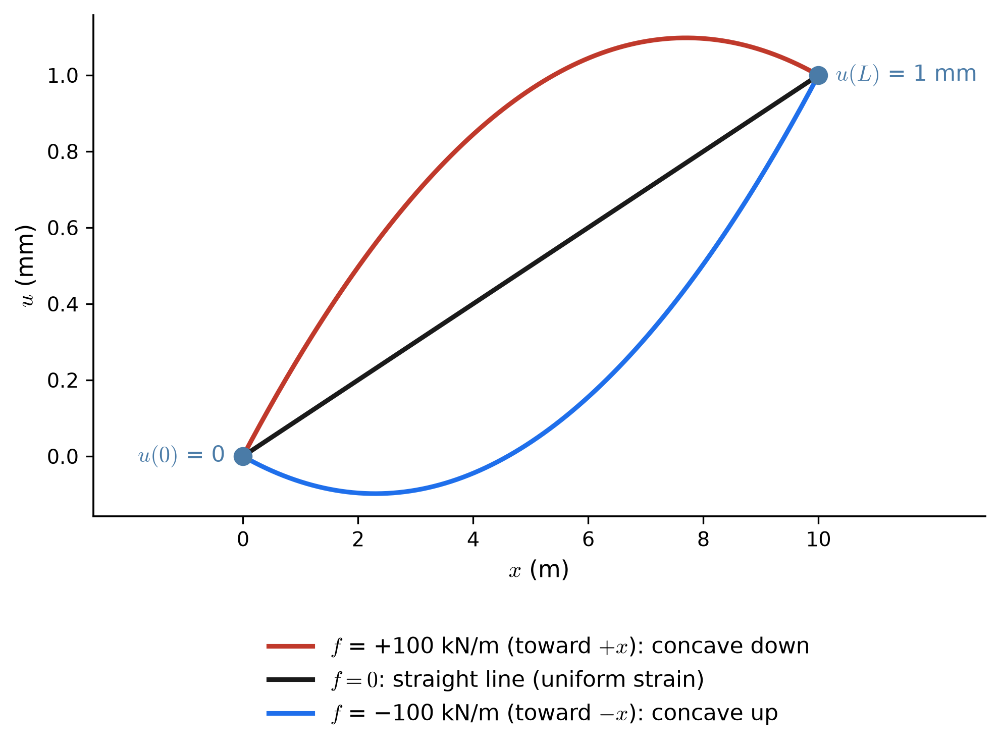
- \(u_{,xx} = -f/EA\): the load sets the curvature of the displacement, just as heat generation set the curvature of the temperature.
- \(f = 0\): \(u\) is linear, \(\varepsilon\) and \(N\) are constant — the familiar \(\delta = PL/EA\) bar.
- \(f \ne 0\): the strain, and therefore \(N\), changes along the rod at the rate \(-f\).
D.5 The forcing function \(f\)
\(f(x)\) is an axial load per unit length of rod, in N/m, positive when it points toward \(+x\). It is the only data that acts in the interior of \(\Omega\). Integrated over the length, it is the total distributed force, in N:
\[ \int_0^L f\,dx \quad \left[\tfrac{\text{N}}{\text{m}}\cdot\text{m} = \text{N}\right] \qquad\text{e.g.}\qquad (-40\ \text{kN/m})(10\ \text{m}) = -400\ \text{kN} \quad\text{(400 kN carried by friction, upward)} \]
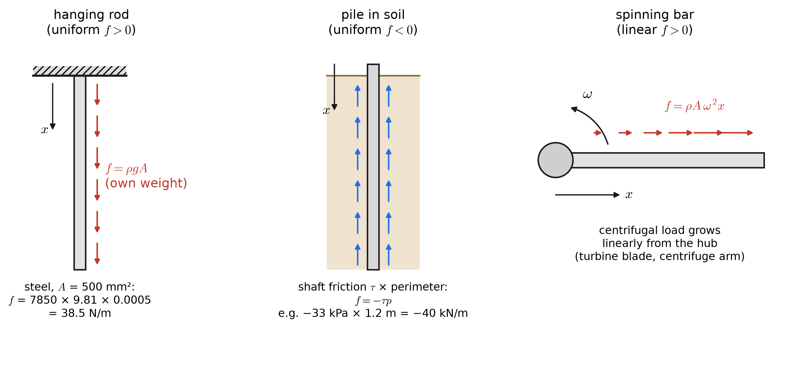
- Self-weight of a vertical member: \(f = \rho g A\). It is often negligible — 38.5 N/m for a 500 mm² steel rod — but not for long hoist cables or tall columns.
- Skin friction along a pile or ground anchor: the soil resists the motion, so \(f\) points opposite to the motion.
- Inertial (centrifugal) load on a spinning member: \(f = \rho A\omega^2 x\), which grows with distance from the hub.
- Loads that act at a point (a bracket bolted halfway along) are not an \(f\) in the strong form: \(f\) would have to be a delta function, and \(u_{,xx}\) would not exist there. The weak form handles them naturally; the strong form does not.
D.6 Boundary conditions
Each end gets exactly one condition: either its displacement is known, or the force applied to it is known. Never both, and never neither.
D.6.1 Dirichlet: \(u = g\) on \(\Gamma_g\) — the displacement is known
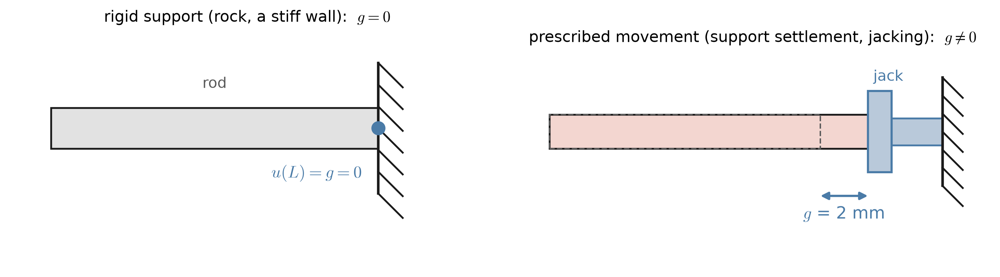
- \(g\) is a displacement, in m. \(g = 0\) is the ordinary fixed support.
- A Dirichlet condition pins the value of \(u\) and says nothing about the slope, and so nothing about the force there. The force the support supplies — the reaction — is an output, found after solving: \(N\) at that end.
- It is an essential boundary condition. In the weak form, it is built into the trial space \(\mathcal{S}\).
D.6.2 Neumann: \((EA\,u_{,x})\,n = h\) on \(\Gamma_h\) — the end force is known
At an end with no support, the only thing holding the rod in equilibrium is the applied force. Take a sliver of rod right at the end. The applied force \(h\) acts on its outer face, and the rest of the rod pulls on its inner face with \(N\), toward the inside:
\[ \text{at } x = L:\quad h - N(L) = 0 \qquad\qquad \text{at } x = 0:\quad h + N(0) = 0 \]
Both are one statement, \(N\,n = h\). With \(N = EA\,u_{,x}\), that is exactly the Neumann condition of the strong form:
\[ h = \sigma A\, n = \left(EA\,u_{,x}\right) n \qquad\Longrightarrow\qquad \text{at } x = 0:\; -EA\,u_{,x}(0) = h \qquad\qquad \text{at } x = L:\; +EA\,u_{,x}(L) = h \]
Important\(h\) means something different here than for the wall
For the rod, \(h = \sigma A\,n\) is the \(x\)-component of the applied force vector: \(h > 0\) means the force points toward \(+x\), whichever end it acts on. So \(h > 0\) pushes on the left end (compression) but pulls on the right end (tension).
For the wall, \(h = -q\,n\) is the heat flux into the body: \(h > 0\) means heat enters, whichever face it acts on.
The equations \(\mp K u_{,x} = h\) are identical, so the slopes in the two problems behave identically. What changes is which way the arrow in the picture points.
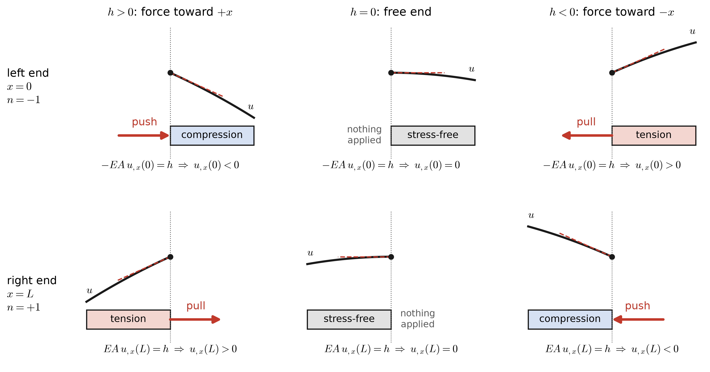
- \(h\) is a force, in N, positive toward \(+x\) (or, per unit area, a traction in Pa).
- \(h = 0\) is a free end: no force, so zero strain — the displacement curve arrives flat.
- The magnitude of the slope is \(|h|/EA\). For the pile, \(900\ \text{kN} / 2.7\times10^9\ \text{N} = 3.33\times10^{-4}\): the head is shortened by 0.33 mm per meter.
- It is a natural boundary condition. In the weak form it appears as the boundary term \(w(0)\,h\).
- A spring support, \(h = -k_s\,u\), mixes value and slope. That is a Robin condition and is not part of the model problem.
D.6.3 Which end gets which condition
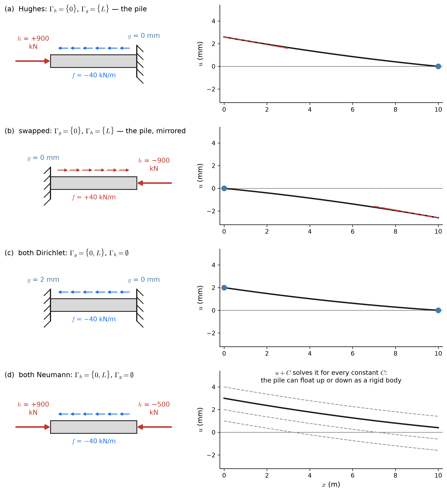
- (a) Hughes’ arrangement. Force given at \(x = 0\), displacement at \(x = L\): \(\;u(L) = g,\;\; -EA\,u_{,x}(0) = h\). This is the pile: 900 kN pushing down (toward \(+x\)) on the head, the toe fixed on rock.
- (b) Swapped. Displacement given at \(x = 0\), force at \(x = L\): \(\;u(0) = g,\;\; +EA\,u_{,x}(L) = h\). Drawn here as the mirror image of (a) — the same pile, stood on its head. Because \(x\) now runs from the toe to the head, the column load points toward \(-x\) and \(h\) = −900 kN; the friction flips too, \(f\) = +40 kN/m. Compare the wall, where the mirror image kept \(h\) = +50 W/m². A force has a direction in space; a heat inflow does not.
- (c) Two Dirichlet ends is well-posed: here the head is jacked down 2 mm and the toe is fixed. The curve is a straight line plus the small bow from the friction.
- (d) Two Neumann ends is not well-posed:
- Uniqueness fails. Force data see only \(u_{,x}\), so any rigid-body shift \(u + C\) is also a solution. Nothing stops the pile from floating.
- Existence needs equilibrium. The applied forces must balance: \(h_0 + h_L + \int_0^L f\,dx = 0\). The panel uses \(h_L\) = −500 kN — the rock’s reaction, handed in as data — so that \(900 - 500 - 400 = 0\). Any other \(h_L\) and the rod accelerates, and there is no static solution.
- So \(\Gamma_g\) must not be empty: at least one end must be held.
D.7 The strong form, complete
For Hughes’ arrangement (a):
\[ (\mathrm{S}) \qquad \begin{aligned} &\text{Given } f : \bar\Omega \to \RR \;[\text{N/m}],\; EA > 0 \;[\text{N}],\; g \;[\text{m}], \text{ and } h \;[\text{N}], \text{ find } u : \bar\Omega \to \RR \;[\text{m}] \text{ such that} \\[3pt] &\qquad \left(EA\,u_{,x}\right)_{,x} + f = 0 && \text{on } \Omega = \,]0, L[ && \text{(equilibrium + Hooke)} \\ &\qquad u(L) = g && && \text{(Dirichlet: known displacement)} \\ &\qquad -EA\,u_{,x}(0) = h && && \text{(Neumann: known end force)} \end{aligned} \]
and, for the swapped arrangement (b), \(u(0) = g\) and \(+EA\,u_{,x}(L) = h\).
- Strong because the equation must hold at every point, which demands \(u_{,xx}\) everywhere. A rod whose area steps from one size to another, or a point load partway along, already breaks this; the weak form will not mind.
- With constant \(EA\) and \(f\), the exact solution of (a) is
\[ u(x) = g + \frac{h}{EA}\,(L - x) + \frac{f}{2EA}\,\left(L^2 - x^2\right) \qquad\qquad N(x) = EA\,u_{,x} = -h - f\,x \]
D.8 Worked example: the pile
The pile of Figure D.1: \(L\) = 10 m, \(E\) = 30 GPa, \(A\) = 0.09 m², so \(EA = 2.7\times10^{9}\) N. A column pushes down on the head with 900 kN (\(h\) = +900 kN, toward \(+x\)); skin friction of 40 kN/m acts upward (\(f\) = −40 kN/m); the toe sits on rock (\(g\) = 0).
\[ \begin{aligned} u(x) &= \frac{900\times10^{3}}{2.7\times10^{9}}\,(10 - x) + \frac{-40\times10^{3}}{2(2.7\times10^{9})}\,(100 - x^2) \quad [\text{m}] \\[4pt] u(0) &= 3.333 - 0.741 = 2.59\ \text{mm (the head settles)} \qquad\qquad u_{,x}(0) = -\frac{h}{EA} = -3.333\times10^{-4} \\[4pt] N(x) &= EA\,u_{,x} = -900 + 40\,x \quad [\text{kN}] \qquad\qquad N(0) = -900\ \text{kN}, \quad N(L) = -500\ \text{kN} \end{aligned} \]
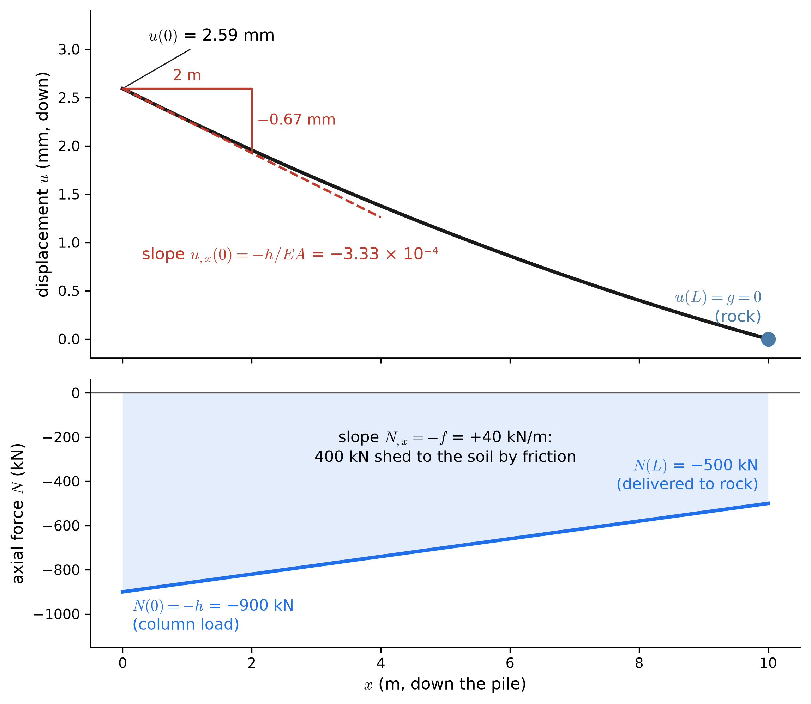
Every line of the strong form, checked on the picture:
- The differential equation. \(EA\,u_{,xx} = -f > 0\): the displacement curve bends upward uniformly. Equivalently \(N_{,x} = -f\) = +40 kN/m: the force line in the lower panel is straight.
- The Dirichlet condition. \(u = 0\) at the rock.
- The Neumann condition. At the head the tangent drops 0.67 mm over 2 m, a slope of \(-3.33\times10^{-4}\), and \(-EA\,u_{,x}(0) = -2.7\times10^{9}\times(-3.33\times10^{-4}) = 900\) kN \(= h\).
- Equilibrium of the whole pile. 900 kN down at the head = 400 kN of friction + 500 kN at the toe. The Dirichlet end’s reaction, 500 kN, came out of the solution.
D.9 Explore the strong form
The black curve is the exact \(u(x)\) for the settings below, with the pile’s \(L\) = 10 m. Blue dots are Dirichlet ends; the dashed red line is the strain a Neumann condition forces on its end. Under the plots, the rod is drawn twice: grey ticks are material points before loading, and black ticks are the same points after, with the displacements exaggerated. The band is shaded by the internal force: red for tension, blue for compression.
- In (a), set \(h = 0\): a free head. The displacement arrives flat and the whole rod is in tension or compression only from friction.
- Switch from (a) to (b) with the same \(h\) = +900 kN: the load now pulls the far end of the rod, the band turns red, and the curve changes shape, not just side. To get the mirror image of the pile you must also flip the signs of \(h\) and \(f\).
- In (a) or (b), double \(EA\): every displacement halves, and \(N\) does not change at all. The forces are set by equilibrium alone; the stiffness only decides how far the rod moves to carry them. In (c), where both ends are held, the stiffness does change \(N\).